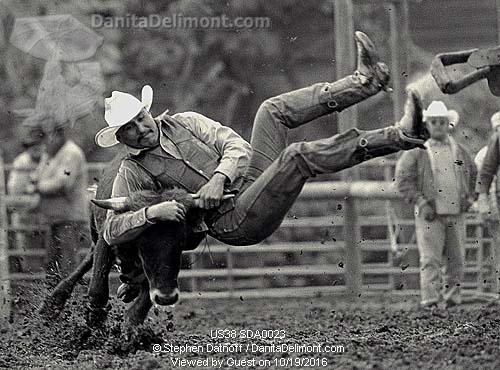
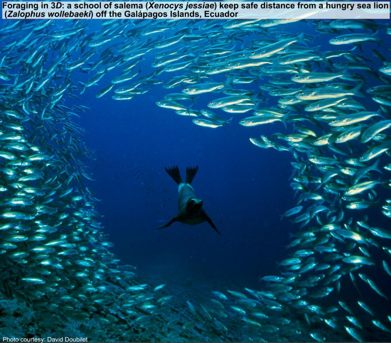
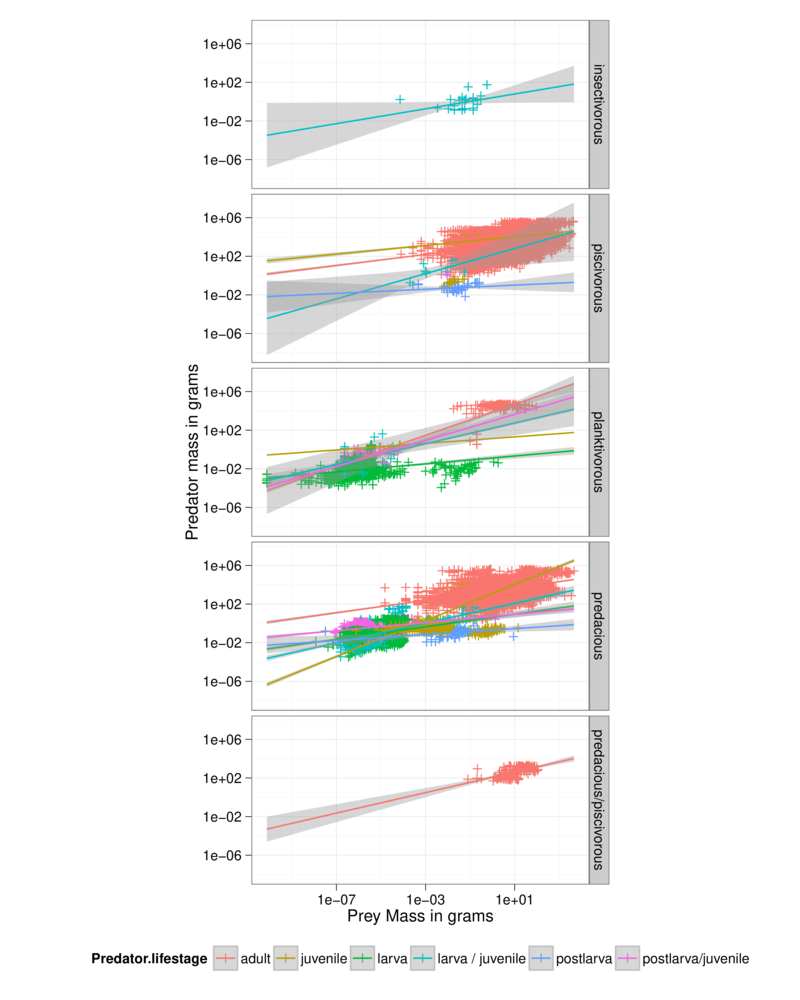

Data Management and Visualization in R#
Learning goals
By the end of this chapter you should be able to:
Keep raw data, derived data, metadata and results in distinct and clearly named places
Inspect a dataset’s structure, types and missing values before changing it
Distinguish an observed zero from a missing observation and document how each is handled
Clean, join and summarize biological data with a script whose steps you can follow and rerun
Reshape data between wide and long forms when the biological question requires it
Build publication quality plots
Choose scales, labels and visual encodings that make a figure clear without distorting the data
Save a derived table and a figure, then recreate both from the raw data after restarting R
Prerequisites
This chapter follows directly from Biological Computing in R. Before starting, you should be able to:
run an R script from the root of a project containing
code,dataandresultsdirectories;create and inspect vectors and data frames, call functions, and interpret
NA;read a CSV file, make a simple calculation and save an output; and
explain the observations exercise’s distinction between missing counts and observed zeros.
You will also use simple summaries such as the mean and median. They are introduced briefly where needed, but revisiting them beforehand may help.
Introduction#
This is the second of MQB’s two main R chapters. Biological Computing in R asked how to express, run and check a computation. We now turn to a new question: how do we make trustworthy data and insightful visualisations from raw observations? Bring your observations_practice.R script and its outputs with you. We will keep returning to the choices you made there as we move on to the richer Pound Hill dataset.
Rapid advances in data collection and the digitization of historical records are generating vast and varied biological datasets. Genomic, ecosystem respiration, climatic, and animal-tracking data are prominent examples. Quantitative biology seeks to discover patterns in such data and fit mathematical models to them, but the reliability of those results depends on how observations are organized and transformed before analysis.
Hadley Wickham captures the challenge of organizing data consistently:
Tidy datasets are all alike, but every messy dataset is messy in its own way. – Hadley Wickham [Wickham, 2014]
A tidy structure makes the roles of variables and observations explicit, allowing data-processing steps to be automated, inspected, and reproduced. This is especially important for biological data, which are often heterogeneous in structure and quality, and reduces the errors introduced by repeated manual editing.
Once data are well structured, the next challenge is to reveal and communicate the patterns they contain. As Edward Tufte argues:
Clutter and confusion are failures of design, not attributes of information. – Edward Tufte [Tufte, 1990]
Effective visualization is therefore not merely decorative: its design should clarify relationships in the data without adding unnecessary distraction. We will move from inspecting and tidying data to exploring them and making figures. Database design, very large datasets and the longer plotting examples are there for you to explore afterwards; they are not needed for the main lesson.
Data wrangling#
You are likely to spend far more time than you expect checking and reorganizing data before you can analyse them. Field observations may be incomplete, formats may have changed between sampling days, or somebody else may have recorded the data. Even your own notes can become surprisingly mysterious after a few months! You may need to:
work out what each row, column and value represents;
distinguish a measured zero from an observation that was never made;
represent missing values consistently as
NAin R, while preserving any original codes in the raw file;calculate new variables, such as measurements converted to SI units;
reshape repeated measurements from wide to long form; or
join information recorded in separate tables.
This is not an exhaustive list. Every manual edit is an opportunity to change the wrong cell or lose track of what was done. A script gives you a record that can be read, checked and run again.

Photograph: Stephen Dalton / Danita Delimont, image reference
US38 SDA003.Some data wrangling principles#
Good data wrangling leaves a trail that you and somebody else can follow. A few habits make that much easier:
Store tables in widely readable formats such as CSV, using UTF-8 text.
Keep metadata with each dataset, including what the fields mean, their units and how missing values were recorded.
Keep the raw files unchanged. Put cleaning and reshaping steps in a script, and save derived tables separately.
Use short, meaningful names for files and columns, and use them consistently.
Prefer one observation per row. When field recording requires a wide table, reshape it with code rather than copying and pasting cells.
Keep one kind of information in each column, so that a numeric column does not also contain notes or units.
Write derived tables and figures to
results/, so that they can be recreated without alteringdata/.
This is not an exhaustive list either—see Readings & Resources for more.
We will explore these ideas using the Pound Hill dataset, collected by students on a past Silwood field course.
Continue with the same coursework project and starting point used in the R chapter. Download the Pound Hill data and its metadata into your project’s data directory. Start R from the project root, where code, data and results sit alongside one another. Before running the notebook examples, check that R is using that folder:
getwd()
stopifnot(file.exists("data/pound_hill_data.csv"))
MyData <- as.matrix(read.csv("data/pound_hill_data.csv", header = FALSE))
class(MyData)
- 'matrix'
- 'array'
header = FALSEtells R that the first row belongs to the data rather than treating it as column names. We will inspect and reorganize those rows ourselves.as.matrix()gives every cell one common type. Because the first column contains species names, all values inMyDataare character strings at this point. We will convert the counts only after reshaping the table.
★ Now load the Metadata:
MyMetaData <- read.csv("data/pound_hill_meta_data.csv", header = TRUE, sep = ";")
class(MyMetaData)
Here,
header =TRUEbecause we do have metadata headers (FieldNameandDescription), andWe have used semicolon (
;) as delimiter because there are commas in one of the field descriptions.We have avoided spaces in the columns headers (so “FieldName” instead of “Field Name”) — please avoid spaces in field or column names because R will replace each space in a column header with a dot, which may be confusing.
Tip
The text encoding of your data file: If you have a string (character data type) stored as a variable in your R workspace, or a file containing strings, the computer has to know what character encoding it is in or it cannot interpret or display it to you correctly. Usually, the encoding will be UTF-8 or ASCII, which is easily handled by most computer languages. Sometimes you may run into (unexpected) bugs when importing and running scripts in R because your file has a non-standard text encoding. You will need to specify the encoding in that case, using the encoding argument of read.csv() and read.table(). You can check the encoding of a file by using file in Linux/Mac. Try in your UNIX terminal:
file -i data/pound_hill_data.csv
or, check encoding of all files in the data directory:
file -i data/*.csv
Use file -I instead of file -i in a Mac terminal.
Let’s see what the metadata look like:
MyMetaData
| FieldName | Description |
|---|---|
| <chr> | <chr> |
| Cultivation | Cultivation treatments applied in three months: october, may, march |
| Block | Treatment blocks ids: a-d |
| Plot | Plot ids under each treatment : 1-12 |
| Quadrat | Sampling quadrats (25x50 cm each) per plot: Q1--Q6 |
| SpeciesCount | Number of individuals of species (count) per quadrat |
Now check out what the data look like:
head(MyData)
| V1 | V2 | V3 | V4 | V5 | V6 | V7 | V8 | V9 | V10 | ⋯ | V51 | V52 | V53 | V54 | V55 | V56 | V57 | V58 | V59 | V60 |
|---|---|---|---|---|---|---|---|---|---|---|---|---|---|---|---|---|---|---|---|---|
| Cultivation | october | october | october | october | october | may | may | may | may | ⋯ | march | march | may | may | may | october | october | october | october | october |
| Block | a | a | a | a | a | a | a | a | a | ⋯ | d | d | d | d | d | d | d | d | d | d |
| Plot | 1 | 1 | 1 | 1 | 1 | 2 | 2 | 2 | 2 | ⋯ | 10 | 10 | 12 | 12 | 12 | 11 | 11 | 11 | 11 | 11 |
| Quadrat | Q1 | Q2 | Q3 | Q4 | Q5 | Q1 | Q2 | Q3 | Q4 | ⋯ | Q5 | Q6 | Q1 | Q2 | Q4 | Q1 | Q2 | Q3 | Q4 | Q5 |
| Achillea millefolium | 4 | 8 | 3 | 20 | 6 | 4 | ⋯ | 4 | 10 | 12 | 6 | 5 | ||||||||
| Agrostis gigantea | 15 | ⋯ | 19 | 80 | 33 | 145 | 45 | 62 | 25 | 57 | 113 | 12 |
R generated the temporary names V1 to V60 because we deliberately imported the file without a header. Use head(), dim() and str() to inspect objects in a way that also works in a script. We will use the metadata now to understand the fields, even though it is not joined to the data table.
Keep a record of every change in an R script. Download data_wrang.R into your project’s code directory and read it alongside the examples below. Run it from the project root with Rscript code/data_wrang.R. Add comments in your own words as you work through it.
OK, so onward with our data wrangling.
Keep a metadata file for each unique dataset#
Data wrangling really begins immediately after data collection. You may collect data of different kinds (e.g., diversity, biomass, tree girth), etc. Keep the original spreadsheet well documented using a “metadata” file that describes the data (you would hopefully have written the first version of this even before you started collecting the data!). The minimum information needed to make a metadata file useful is a description of each of the fields — the column or row headers under which the information is stored in your data/spreadsheet.
Have a look at the metadata file for the Pound Hill dataset:
Tip
Boolean values in R: Write FALSE and TRUE in full. R also recognizes F and T, but they can be reassigned and make mistakes harder to spot. To see the boolean value itself, type
a <- TRUE
in the R console, then type a.
MyMetaData
| FieldName | Description |
|---|---|
| <chr> | <chr> |
| Cultivation | Cultivation treatments applied in three months: october, may, march |
| Block | Treatment blocks ids: a-d |
| Plot | Plot ids under each treatment : 1-12 |
| Quadrat | Sampling quadrats (25x50 cm each) per plot: Q1--Q6 |
| SpeciesCount | Number of individuals of species (count) per quadrat |
Ideally, you would also like to add more information about the data, such as the measurement units of each type of observation. These data include just one type of observation: Number of individuals of species per sample (plot), which is a count (integer, or int data class).
Minimize modifying raw data by hand#
Large datasets make manual cleaning especially error-prone. Record the steps in an R script and leave the raw file unchanged, so that you can start again if a decision turns out to be wrong.
A blank is not automatically a zero. In the observations exercise, a blank count meant NA because nobody knew the value. For this particular Pound Hill exercise, we have been told that each blank records a quadrat where the species was looked for but not found. Only because we know that sampling detail can we turn these blanks into observed zeros. This decision should also be recorded in the metadata:
MyData[MyData == ""] <- 0
Convert wide format data to long format using scripts#
One typically records data in the field or experiments using a “wide” format, where a subject’s (e.g., habitat, plot, treatment, species etc) repeated responses or observations (e.g., species count, biomass, etc) will be in a single row, and each response in a separate column. The raw Pound Hill data were recorded in this way. However, the wide format is not ideal for data analysis — instead you need the data in a “long” format, where each row is one observation point per subject. So each subject will have data in multiple rows. Any measures/variables/observations that don’t change across the subjects will have the same value in all the rows. For humans, the wide format is generally more intuitive for recording (e.g., in field data sheets) data. However, for data inspection and analysis, the long format is preferable for two main reasons:
If you have many response and/or treatment variables, it is hard to inspect the data values in a wide-form version of the dataset. In the case of the pound hill dataset, the response variable is species, and treatment variable is cultivation month (with sequentially nested replicates—block, plot, quadrat— within it), and the data values are the number (count) of individuals of each species per quadrat. As you can see, there are a a large number of columns (60 to be exact), with columns V2-V60 containing different treatment combinations. This makes it hard to visually see problems with the data values. You would have to look across all these columns to see any issues, or if you wanted to run a single command on all the data values (e.g.,
is.integer()to check if they are all integers, as you would expect), it would be harder to do so or interpret the output if all the species counts were in a single column.Long-form datasets are typically required for statistical analysis and visualization packages or commands in R (or Python, for that matter). For example, if you wanted to fit a linear model using R’s
lm()command, with treatment (cultivation month) as the independent variable, you would need to structure your data in long form. Similarly, and if you wanted to plot histograms of species numbers by treatment using ggplot (coming up), you would also need these data in long format.
OK, so let’s go from wide to long format already!
You can switch between wide and long formats using melt() and dcast() from the reshape2 package, as illustrated in data_wrang.R. But first, let’s transpose the data, because for a long format, the nested treatment variables should be in rows:
MyData <- t(MyData)
head(MyData)
| V1 | Cultivation | Block | Plot | Quadrat | Achillea millefolium | Agrostis gigantea | Anagallis arvensis | Anchusa arvensis | Anisantha sterilis | Aphanes australis | ⋯ | Semecio jacobaea | Sonchus asper | Spergula arvensis | Stellaria graminea | Taraxacum officinale | Tripleurospermum inodorum | Veronica arvensis | Veronica persica | Viola arvensis | Vulpia myuros |
|---|---|---|---|---|---|---|---|---|---|---|---|---|---|---|---|---|---|---|---|---|---|
| V2 | october | a | 1 | Q1 | 4 | 0 | 0 | 0 | 0 | 0 | ⋯ | 0 | 0 | 0 | 8 | 0 | 11 | 0 | 1 | 0 | 0 |
| V3 | october | a | 1 | Q2 | 8 | 0 | 0 | 3 | 0 | 0 | ⋯ | 0 | 0 | 0 | 4 | 0 | 1 | 0 | 0 | 3 | 0 |
| V4 | october | a | 1 | Q3 | 3 | 0 | 0 | 1 | 0 | 0 | ⋯ | 0 | 0 | 0 | 1 | 0 | 0 | 0 | 0 | 1 | 0 |
| V5 | october | a | 1 | Q4 | 20 | 0 | 0 | 1 | 0 | 0 | ⋯ | 0 | 0 | 0 | 0 | 0 | 0 | 0 | 0 | 1 | 0 |
| V6 | october | a | 1 | Q5 | 6 | 15 | 0 | 0 | 5 | 0 | ⋯ | 0 | 0 | 0 | 1 | 10 | 0 | 0 | 0 | 0 | 7 |
At this point, you should note that the first row in the data matrix actually contains the column headers, but these are not encoded by R as being column headers. As far as R is concerned, the first row is just another data row. You can check this:
colnames(MyData)
NULL
We need to fix this. Also, we would like to create a dataframe now, as this is needed by the R commands we will be using, and ultimately, any visualization and analysis we will be doing. To this end, let’s first create a temporary dataframe with just the data, without the column names:
TempData <- as.data.frame(MyData[-1,], stringsAsFactors = FALSE)
head(TempData)
| V1 | V2 | V3 | V4 | V5 | V6 | V7 | V8 | V9 | V10 | ⋯ | V36 | V37 | V38 | V39 | V40 | V41 | V42 | V43 | V44 | V45 | |
|---|---|---|---|---|---|---|---|---|---|---|---|---|---|---|---|---|---|---|---|---|---|
| <chr> | <chr> | <chr> | <chr> | <chr> | <chr> | <chr> | <chr> | <chr> | <chr> | ⋯ | <chr> | <chr> | <chr> | <chr> | <chr> | <chr> | <chr> | <chr> | <chr> | <chr> | |
| V2 | october | a | 1 | Q1 | 4 | 0 | 0 | 0 | 0 | 0 | ⋯ | 0 | 0 | 0 | 8 | 0 | 11 | 0 | 1 | 0 | 0 |
| V3 | october | a | 1 | Q2 | 8 | 0 | 0 | 3 | 0 | 0 | ⋯ | 0 | 0 | 0 | 4 | 0 | 1 | 0 | 0 | 3 | 0 |
| V4 | october | a | 1 | Q3 | 3 | 0 | 0 | 1 | 0 | 0 | ⋯ | 0 | 0 | 0 | 1 | 0 | 0 | 0 | 0 | 1 | 0 |
| V5 | october | a | 1 | Q4 | 20 | 0 | 0 | 1 | 0 | 0 | ⋯ | 0 | 0 | 0 | 0 | 0 | 0 | 0 | 0 | 1 | 0 |
| V6 | october | a | 1 | Q5 | 6 | 15 | 0 | 0 | 5 | 0 | ⋯ | 0 | 0 | 0 | 1 | 10 | 0 | 0 | 0 | 0 | 7 |
| V7 | may | a | 2 | Q1 | 4 | 0 | 0 | 1 | 0 | 0 | ⋯ | 0 | 0 | 2 | 0 | 0 | 0 | 0 | 2 | 0 | 0 |
Here, stringsAsFactors = FALSE stops R from automatically converting text columns to factors. We will make any factor conversions ourselves later, after checking what each column contains.
Now let’s assign the original column names to the temporary dataset:
colnames(TempData) <- MyData[1,] # assign column names from original data
head(TempData)
| Cultivation | Block | Plot | Quadrat | Achillea millefolium | Agrostis gigantea | Anagallis arvensis | Anchusa arvensis | Anisantha sterilis | Aphanes australis | ⋯ | Semecio jacobaea | Sonchus asper | Spergula arvensis | Stellaria graminea | Taraxacum officinale | Tripleurospermum inodorum | Veronica arvensis | Veronica persica | Viola arvensis | Vulpia myuros | |
|---|---|---|---|---|---|---|---|---|---|---|---|---|---|---|---|---|---|---|---|---|---|
| <chr> | <chr> | <chr> | <chr> | <chr> | <chr> | <chr> | <chr> | <chr> | <chr> | ⋯ | <chr> | <chr> | <chr> | <chr> | <chr> | <chr> | <chr> | <chr> | <chr> | <chr> | |
| V2 | october | a | 1 | Q1 | 4 | 0 | 0 | 0 | 0 | 0 | ⋯ | 0 | 0 | 0 | 8 | 0 | 11 | 0 | 1 | 0 | 0 |
| V3 | october | a | 1 | Q2 | 8 | 0 | 0 | 3 | 0 | 0 | ⋯ | 0 | 0 | 0 | 4 | 0 | 1 | 0 | 0 | 3 | 0 |
| V4 | october | a | 1 | Q3 | 3 | 0 | 0 | 1 | 0 | 0 | ⋯ | 0 | 0 | 0 | 1 | 0 | 0 | 0 | 0 | 1 | 0 |
| V5 | october | a | 1 | Q4 | 20 | 0 | 0 | 1 | 0 | 0 | ⋯ | 0 | 0 | 0 | 0 | 0 | 0 | 0 | 0 | 1 | 0 |
| V6 | october | a | 1 | Q5 | 6 | 15 | 0 | 0 | 5 | 0 | ⋯ | 0 | 0 | 0 | 1 | 10 | 0 | 0 | 0 | 0 | 7 |
| V7 | may | a | 2 | Q1 | 4 | 0 | 0 | 1 | 0 | 0 | ⋯ | 0 | 0 | 2 | 0 | 0 | 0 | 0 | 2 | 0 | 0 |
The row names still remain, but they are not really bothering us, so we can ignore them. But if you do want to get rid of them, you can:
rownames(TempData) <- NULL
head(TempData)
| Cultivation | Block | Plot | Quadrat | Achillea millefolium | Agrostis gigantea | Anagallis arvensis | Anchusa arvensis | Anisantha sterilis | Aphanes australis | ⋯ | Semecio jacobaea | Sonchus asper | Spergula arvensis | Stellaria graminea | Taraxacum officinale | Tripleurospermum inodorum | Veronica arvensis | Veronica persica | Viola arvensis | Vulpia myuros | |
|---|---|---|---|---|---|---|---|---|---|---|---|---|---|---|---|---|---|---|---|---|---|
| <chr> | <chr> | <chr> | <chr> | <chr> | <chr> | <chr> | <chr> | <chr> | <chr> | ⋯ | <chr> | <chr> | <chr> | <chr> | <chr> | <chr> | <chr> | <chr> | <chr> | <chr> | |
| 1 | october | a | 1 | Q1 | 4 | 0 | 0 | 0 | 0 | 0 | ⋯ | 0 | 0 | 0 | 8 | 0 | 11 | 0 | 1 | 0 | 0 |
| 2 | october | a | 1 | Q2 | 8 | 0 | 0 | 3 | 0 | 0 | ⋯ | 0 | 0 | 0 | 4 | 0 | 1 | 0 | 0 | 3 | 0 |
| 3 | october | a | 1 | Q3 | 3 | 0 | 0 | 1 | 0 | 0 | ⋯ | 0 | 0 | 0 | 1 | 0 | 0 | 0 | 0 | 1 | 0 |
| 4 | october | a | 1 | Q4 | 20 | 0 | 0 | 1 | 0 | 0 | ⋯ | 0 | 0 | 0 | 0 | 0 | 0 | 0 | 0 | 1 | 0 |
| 5 | october | a | 1 | Q5 | 6 | 15 | 0 | 0 | 5 | 0 | ⋯ | 0 | 0 | 0 | 1 | 10 | 0 | 0 | 0 | 0 | 7 |
| 6 | may | a | 2 | Q1 | 4 | 0 | 0 | 1 | 0 | 0 | ⋯ | 0 | 0 | 2 | 0 | 0 | 0 | 0 | 2 | 0 | 0 |
Finally, let’s convert the data to long format. For this, we need the reshape2 package:
Note
Both library() and require() are commands/functions to load packages. The difference is that require() is designed for use inside other functions, so it returns FALSE and gives a warning, whereaslibrary() returns an error by default if the package does not exist.
require(reshape2)# load the reshape2 package
Loading required package: reshape2
Attaching package: ‘reshape2’
The following object is masked from ‘package:tidyr’:
smiths
Check out the help for the melt command of reshape2: ?melt.
OK finally, let’s wrangle this dataset into submission!
MyWrangledData <- melt(TempData, id=c("Cultivation", "Block", "Plot", "Quadrat"), variable.name = "Species", value.name = "Count")
head(MyWrangledData); tail(MyWrangledData)
| Cultivation | Block | Plot | Quadrat | Species | Count | |
|---|---|---|---|---|---|---|
| <chr> | <chr> | <chr> | <chr> | <fct> | <chr> | |
| 1 | october | a | 1 | Q1 | Achillea millefolium | 4 |
| 2 | october | a | 1 | Q2 | Achillea millefolium | 8 |
| 3 | october | a | 1 | Q3 | Achillea millefolium | 3 |
| 4 | october | a | 1 | Q4 | Achillea millefolium | 20 |
| 5 | october | a | 1 | Q5 | Achillea millefolium | 6 |
| 6 | may | a | 2 | Q1 | Achillea millefolium | 4 |
| Cultivation | Block | Plot | Quadrat | Species | Count | |
|---|---|---|---|---|---|---|
| <chr> | <chr> | <chr> | <chr> | <fct> | <chr> | |
| 2414 | may | d | 12 | Q4 | Vulpia myuros | 0 |
| 2415 | october | d | 11 | Q1 | Vulpia myuros | 0 |
| 2416 | october | d | 11 | Q2 | Vulpia myuros | 0 |
| 2417 | october | d | 11 | Q3 | Vulpia myuros | 0 |
| 2418 | october | d | 11 | Q4 | Vulpia myuros | 0 |
| 2419 | october | d | 11 | Q5 | Vulpia myuros | 0 |
This is the long format we have been extolling! It looks much simpler, with all the count data in a single, long column with each count value associated with some “attributes”. It is now clear that the fundamental unit of analysis is a species’ count in a quadrat, each nested within a plot, each in turn nested within a block, and finally, each of which is nested within a cultivation month (the main treatment).
We can also now assign the correct data types to each column:
MyWrangledData[, "Cultivation"] <- as.factor(MyWrangledData[, "Cultivation"])
MyWrangledData[, "Block"] <- as.factor(MyWrangledData[, "Block"])
MyWrangledData[, "Plot"] <- as.factor(MyWrangledData[, "Plot"])
MyWrangledData[, "Quadrat"] <- as.factor(MyWrangledData[, "Quadrat"])
MyWrangledData[, "Count"] <- as.integer(MyWrangledData[, "Count"])
str(MyWrangledData)
'data.frame': 2419 obs. of 6 variables:
$ Cultivation: Factor w/ 3 levels "march","may",..: 3 3 3 3 3 2 2 2 2 2 ...
$ Block : Factor w/ 4 levels "a","b","c","d": 1 1 1 1 1 1 1 1 1 1 ...
$ Plot : Factor w/ 12 levels "1","10","11",..: 1 1 1 1 1 5 5 5 5 5 ...
$ Quadrat : Factor w/ 6 levels "Q1","Q2","Q3",..: 1 2 3 4 5 1 2 3 4 5 ...
$ Species : Factor w/ 41 levels "Achillea millefolium",..: 1 1 1 1 1 1 1 1 1 1 ...
$ Count : int 4 8 3 20 6 4 0 0 0 0 ...
On to data exploration#
Once you have wrangled the Pound Hill data to its long format, you are ready to go! You may want to start by examining and visualizing the basic properties of the data, such as the number of tree species (41) in the dataset, number of quadrats (replicates) per plot and cultivation treatment, etc.
We will learn about visualization next. After that, you can return to this dataset and try out some visual data exploration. For example, a useful visualization would be to make a histogram of abundances of species, grouped by different factors. For example, you can look at distributions of species’ abundances grouped by the fundamental treatment, Cultivation.
The tidyverse route#
Base R is not the only sensible way to wrangle data. The tidyverse is a collection of packages that are designed to work together. Here we will use dplyr to select, filter, group and summarise rows, tidyr to change the shape of a table, and later ggplot2 to make figures.
If tidyverse is installed (see the end of the R Chapter), load it:
require(tidyverse)
This loads a number of packages at one go (and you might get some name-conflict-masking messages; see the note below). You can list these packages:
tidyverse_packages(include_self = TRUE) # the include_self = TRUE means list "tidyverse" as well
- 'broom'
- 'conflicted'
- 'cli'
- 'dbplyr'
- 'dplyr'
- 'dtplyr'
- 'forcats'
- 'ggplot2'
- 'googledrive'
- 'googlesheets4'
- 'haven'
- 'hms'
- 'httr'
- 'jsonlite'
- 'lubridate'
- 'magrittr'
- 'modelr'
- 'pillar'
- 'purrr'
- 'ragg'
- 'readr'
- 'readxl'
- 'reprex'
- 'rlang'
- 'rstudioapi'
- 'rvest'
- 'stringr'
- 'tibble'
- 'tidyr'
- 'xml2'
- 'tidyverse'
That’s a lot of packages!
The first time you load tidyverse, you will get some feedback from R, including something like the following:
── Conflicts ────────────────────────────────────────── tidyverse_conflicts() ──
✖ dplyr::filter() masks stats::filter()
✖ dplyr::lag() masks stats::lag()
Depending on which package you are loading, you might get such a warning message, that “so and so” function is being “masked” from another one. Basically, any additional packages you load may have one or more functions with the same names(s) as existing function(s) (which will typically do something completely different) in base R’s packages. This creates name conflicts. Therefore, R will prevent you from using the new function(s) that you have enabled by using the same name of an pre-existing function. It gives priority to the pre-existing one. So, for example, if you call just filter(), the command that will be used is the one from stats, and not the one from dplyr. In this scenario, you can use the new function by using the double colon notation :: like so: dplyr::filter().
Note
The :: notation is like the dot notation in Python — it allows you to access a particular function (like a Python module) from a package. So you can also use the command at the end of the :: (try just as_tibble(MyWrangledData), for example), but it’s just safer to use the :: because then you can rest assured that you are actually using the function you intended to.
OK, let’s try data exploration in tidyverse.
First, let’s convert the dataframe to a “tibble”:
MyWrangledData <- dplyr::as_tibble(MyWrangledData)
MyWrangledData
| Cultivation | Block | Plot | Quadrat | Species | Count |
|---|---|---|---|---|---|
| <fct> | <fct> | <fct> | <fct> | <fct> | <int> |
| october | a | 1 | Q1 | Achillea millefolium | 4 |
| october | a | 1 | Q2 | Achillea millefolium | 8 |
| october | a | 1 | Q3 | Achillea millefolium | 3 |
| october | a | 1 | Q4 | Achillea millefolium | 20 |
| october | a | 1 | Q5 | Achillea millefolium | 6 |
| may | a | 2 | Q1 | Achillea millefolium | 4 |
| may | a | 2 | Q2 | Achillea millefolium | 0 |
| may | a | 2 | Q3 | Achillea millefolium | 0 |
| may | a | 2 | Q4 | Achillea millefolium | 0 |
| may | a | 2 | Q5 | Achillea millefolium | 0 |
| march | a | 3 | Q1 | Achillea millefolium | 1 |
| march | a | 3 | Q2 | Achillea millefolium | 2 |
| march | a | 3 | Q3 | Achillea millefolium | 5 |
| march | a | 3 | Q4 | Achillea millefolium | 12 |
| march | a | 3 | Q5 | Achillea millefolium | 2 |
| march | a | 3 | Q6 | Achillea millefolium | 0 |
| may | b | 4 | Q1 | Achillea millefolium | 0 |
| may | b | 4 | Q2 | Achillea millefolium | 0 |
| may | b | 4 | Q3 | Achillea millefolium | 0 |
| may | b | 4 | Q4 | Achillea millefolium | 0 |
| may | b | 4 | Q5 | Achillea millefolium | 0 |
| march | b | 5 | Q1 | Achillea millefolium | 3 |
| march | b | 5 | Q2 | Achillea millefolium | 8 |
| march | b | 5 | Q3 | Achillea millefolium | 3 |
| march | b | 5 | Q4 | Achillea millefolium | 7 |
| march | b | 5 | Q5 | Achillea millefolium | 20 |
| october | b | 6 | Q1 | Achillea millefolium | 1 |
| october | b | 6 | Q2 | Achillea millefolium | 0 |
| october | b | 6 | Q3 | Achillea millefolium | 3 |
| october | b | 6 | Q4 | Achillea millefolium | 1 |
| ⋮ | ⋮ | ⋮ | ⋮ | ⋮ | ⋮ |
| october | b | 6 | Q4 | Vulpia myuros | 0 |
| march | c | 7 | Q1 | Vulpia myuros | 0 |
| march | c | 7 | Q2 | Vulpia myuros | 0 |
| march | c | 7 | Q3 | Vulpia myuros | 1 |
| march | c | 7 | Q4 | Vulpia myuros | 0 |
| march | c | 7 | Q5 | Vulpia myuros | 0 |
| october | c | 8 | Q1 | Vulpia myuros | 0 |
| october | c | 8 | Q2 | Vulpia myuros | 0 |
| october | c | 8 | Q3 | Vulpia myuros | 0 |
| october | c | 8 | Q4 | Vulpia myuros | 0 |
| october | c | 8 | Q5 | Vulpia myuros | 0 |
| may | c | 9 | Q1 | Vulpia myuros | 0 |
| may | c | 9 | Q2 | Vulpia myuros | 0 |
| may | c | 9 | Q3 | Vulpia myuros | 0 |
| may | c | 9 | Q4 | Vulpia myuros | 0 |
| may | c | 9 | Q5 | Vulpia myuros | 0 |
| march | d | 10 | Q1 | Vulpia myuros | 0 |
| march | d | 10 | Q2 | Vulpia myuros | 0 |
| march | d | 10 | Q3 | Vulpia myuros | 0 |
| march | d | 10 | Q4 | Vulpia myuros | 0 |
| march | d | 10 | Q5 | Vulpia myuros | 25 |
| march | d | 10 | Q6 | Vulpia myuros | 0 |
| may | d | 12 | Q1 | Vulpia myuros | 0 |
| may | d | 12 | Q2 | Vulpia myuros | 0 |
| may | d | 12 | Q4 | Vulpia myuros | 0 |
| october | d | 11 | Q1 | Vulpia myuros | 0 |
| october | d | 11 | Q2 | Vulpia myuros | 0 |
| october | d | 11 | Q3 | Vulpia myuros | 0 |
| october | d | 11 | Q4 | Vulpia myuros | 0 |
| october | d | 11 | Q5 | Vulpia myuros | 0 |
This is the same as:
MyWrangledData <- as_tibble(MyWrangledData)
class(MyWrangledData)
- 'tbl_df'
- 'tbl'
- 'data.frame'
Note
A “tibble” in tidyverse is equivalent to R’s traditional data.frame. Tibbles are modified data frames that make data exploration more robust. As such, you do not need to convert a data frame to tibble to use the tidyverse functions, but its a good idea to do so. Read more about why, here.
Let’s continue, but without using :::
glimpse(MyWrangledData) #like str(), but nicer!
Rows: 2,419
Columns: 6
$ Cultivation <fct> october, october, october, october, october, may, may, may…
$ Block <fct> a, a, a, a, a, a, a, a, a, a, a, a, a, a, a, a, b, b, b, b…
$ Plot <fct> 1, 1, 1, 1, 1, 2, 2, 2, 2, 2, 3, 3, 3, 3, 3, 3, 4, 4, 4, 4…
$ Quadrat <fct> Q1, Q2, Q3, Q4, Q5, Q1, Q2, Q3, Q4, Q5, Q1, Q2, Q3, Q4, Q5…
$ Species <fct> Achillea millefolium, Achillea millefolium, Achillea mille…
$ Count <int> 4, 8, 3, 20, 6, 4, 0, 0, 0, 0, 1, 2, 5, 12, 2, 0, 0, 0, 0,…
Or this:
utils::View(MyWrangledData) #same as fix()
filter(MyWrangledData, Count>100) #like subset(), but nicer!
| Cultivation | Block | Plot | Quadrat | Species | Count |
|---|---|---|---|---|---|
| <fct> | <fct> | <fct> | <fct> | <fct> | <int> |
| october | b | 6 | Q1 | Agrostis gigantea | 143 |
| october | c | 8 | Q1 | Agrostis gigantea | 198 |
| october | c | 8 | Q5 | Agrostis gigantea | 351 |
| march | d | 10 | Q1 | Agrostis gigantea | 259 |
| march | d | 10 | Q4 | Agrostis gigantea | 291 |
| may | d | 12 | Q2 | Agrostis gigantea | 145 |
| october | d | 11 | Q4 | Agrostis gigantea | 113 |
| may | c | 9 | Q2 | Anisantha sterilis | 120 |
| october | a | 1 | Q1 | Holcus mollis | 159 |
| october | a | 1 | Q3 | Holcus mollis | 144 |
| october | a | 1 | Q4 | Holcus mollis | 124 |
| october | a | 1 | Q5 | Holcus mollis | 115 |
| may | a | 2 | Q1 | Holcus mollis | 120 |
| october | b | 6 | Q2 | Holcus mollis | 129 |
| october | b | 6 | Q3 | Holcus mollis | 123 |
| october | c | 8 | Q2 | Holcus mollis | 256 |
| october | c | 8 | Q3 | Holcus mollis | 147 |
| october | c | 8 | Q4 | Holcus mollis | 128 |
| october | d | 11 | Q1 | Holcus mollis | 104 |
| october | d | 11 | Q2 | Holcus mollis | 131 |
| march | d | 10 | Q3 | Medicago lupulina | 114 |
slice(MyWrangledData, 10:15) # Look at a particular range of data rows
| Cultivation | Block | Plot | Quadrat | Species | Count |
|---|---|---|---|---|---|
| <fct> | <fct> | <fct> | <fct> | <fct> | <int> |
| may | a | 2 | Q5 | Achillea millefolium | 0 |
| march | a | 3 | Q1 | Achillea millefolium | 1 |
| march | a | 3 | Q2 | Achillea millefolium | 2 |
| march | a | 3 | Q3 | Achillea millefolium | 5 |
| march | a | 3 | Q4 | Achillea millefolium | 12 |
| march | a | 3 | Q5 | Achillea millefolium | 2 |
One handy thing that you can do using tidyverse is using the “pipe” %>% operator to create a compact sequence of manipulations of your dataset with dplyr:
MyWrangledData %>%
group_by(Species) %>%
summarise(avg = mean(Count))
| Species | avg |
|---|---|
| <fct> | <dbl> |
| Achillea millefolium | 6.93220339 |
| Agrostis gigantea | 57.40677966 |
| Anagallis arvensis | 1.64406780 |
| Anchusa arvensis | 0.62711864 |
| Anisantha sterilis | 10.05084746 |
| Aphanes australis | 0.01694915 |
| Artemesia vulgaris | 5.10169492 |
| Bromus hordaceus | 1.37288136 |
| Cerastium glomeratun | 0.06779661 |
| Chenopodium album | 0.25423729 |
| Cirsium arvense | 0.27118644 |
| Conyza canadensis | 0.06779661 |
| Crepis capillaris | 0.18644068 |
| Crepis paludos | 0.08474576 |
| Elytrigia repens | 2.23728814 |
| Epilobium ciliatum | 0.18644068 |
| Erodium cicutarium | 0.88135593 |
| Fallopia convolvulus | 1.38983051 |
| Festuca rubra | 0.03389831 |
| Geranium molle | 0.79661017 |
| Holcus mollis | 54.64406780 |
| Hypochaeris radicata | 0.01694915 |
| Lactuca serriola | 0.01694915 |
| Medicago lupulina | 7.59322034 |
| Myosotis arvensis | 0.20338983 |
| Plantago lanceolata | 0.16949153 |
| Polpaver dubium | 0.03389831 |
| Raphanus raphanistrum | 0.15254237 |
| Rumex acetosella | 3.44067797 |
| Rumex crispus | 0.45762712 |
| Rumex obtusifolia | 0.71186441 |
| Semecio jacobaea | 0.01694915 |
| Sonchus asper | 0.74576271 |
| Spergula arvensis | 3.54237288 |
| Stellaria graminea | 0.71186441 |
| Taraxacum officinale | 0.37288136 |
| Tripleurospermum inodorum | 0.28813559 |
| Veronica arvensis | 0.25423729 |
| Veronica persica | 0.88135593 |
| Viola arvensis | 0.50847458 |
| Vulpia myuros | 0.59322034 |
This is the same as the following command using base R (not using dplyr at all):
aggregate(MyWrangledData$Count, list(MyWrangledData$Species), FUN=mean)
| Group.1 | x |
|---|---|
| <fct> | <dbl> |
| Achillea millefolium | 6.93220339 |
| Agrostis gigantea | 57.40677966 |
| Anagallis arvensis | 1.64406780 |
| Anchusa arvensis | 0.62711864 |
| Anisantha sterilis | 10.05084746 |
| Aphanes australis | 0.01694915 |
| Artemesia vulgaris | 5.10169492 |
| Bromus hordaceus | 1.37288136 |
| Cerastium glomeratun | 0.06779661 |
| Chenopodium album | 0.25423729 |
| Cirsium arvense | 0.27118644 |
| Conyza canadensis | 0.06779661 |
| Crepis capillaris | 0.18644068 |
| Crepis paludos | 0.08474576 |
| Elytrigia repens | 2.23728814 |
| Epilobium ciliatum | 0.18644068 |
| Erodium cicutarium | 0.88135593 |
| Fallopia convolvulus | 1.38983051 |
| Festuca rubra | 0.03389831 |
| Geranium molle | 0.79661017 |
| Holcus mollis | 54.64406780 |
| Hypochaeris radicata | 0.01694915 |
| Lactuca serriola | 0.01694915 |
| Medicago lupulina | 7.59322034 |
| Myosotis arvensis | 0.20338983 |
| Plantago lanceolata | 0.16949153 |
| Polpaver dubium | 0.03389831 |
| Raphanus raphanistrum | 0.15254237 |
| Rumex acetosella | 3.44067797 |
| Rumex crispus | 0.45762712 |
| Rumex obtusifolia | 0.71186441 |
| Semecio jacobaea | 0.01694915 |
| Sonchus asper | 0.74576271 |
| Spergula arvensis | 3.54237288 |
| Stellaria graminea | 0.71186441 |
| Taraxacum officinale | 0.37288136 |
| Tripleurospermum inodorum | 0.28813559 |
| Veronica arvensis | 0.25423729 |
| Veronica persica | 0.88135593 |
| Viola arvensis | 0.50847458 |
| Vulpia myuros | 0.59322034 |
Clearly, the latter is also compact, but arguably less intuitive compared to the piped sequence of dplyr commands.
Learning to use tidyverse involves learning some new syntax and a lot of new commands, but if you plan to do a lot of data wrangling and exploration, you will benefit from getting to know them well.
Have a look at some tidyverse-related cheatsheets to explore further.
Practical: data wrangling with tidyverse#
The earlier data_wrang.R script uses reshape2, which you will still meet in older ecological code. Now write a script called data_wrang_tidy.R that carries out the same work with dplyr and tidyr. Begin with a copy of data_wrang.R, work through it one step at a time, and compare the result after each change.
For example, the current tidyr function for changing a table from wide to long form is pivot_longer(). The identifying columns stay in place, while the species columns become two new columns: one for the species name and one for its count:
MyWrangledData <- TempData |>
tidyr::pivot_longer(
cols = -c(Cultivation, Block, Plot, Quadrat),
names_to = "Species",
values_to = "Count"
)
Try this first on a small table whose shape you can check by eye. Then apply it to TempData and confirm the dimensions, names and values before continuing.
The RStudio cheatsheets, especially the data tidying and transformation sheets, are useful while you work. Use them to find a function, but keep checking the shape and meaning of your data after every step.
Handling Big Data in R#
The buzzword ‘Big Data’ basically refers to datasets that have the following properties:
A dataset that does not fit into available RAM on one system (say, 2 gigabytes).
A dataset that has so many rows (when in it’s long format — see above sections) that it significantly slows down your analysis or simulation without vectorization (that is, when looping).
Both these criteria are programming language-, and computer hardware-dependent, of course. For example, a 32-bit OS can only handle ~2 GB of RAM, so this computer will struggle every time you try to handle a dataset in that size range.
R reads data into RAM all at once when you using the read.table (or its wrapper, read.csv() — maybe
you have realized by now that read.csv() is basically calling read.table() with a particular set of options. That is, objects in R live in memory entirely, and big-ish data in RAM will cause R to choke. Python has similar problems, but you can circumvent these to an extent by using numpy arrays (see the second Python Chapter).
There are a few options (which you can combine, of course) if you are actually using datasets that are so large:
Import large files smartly; e.g., using
scan()in R, and then create subsets of the data that you need. Also, use thereshapeortidyrpackages to covert your data in the most “square” (so neither too long or too wide) format as possible. Of course, you will need subsets of data in long format for analysis (see sections above).Use the
bigmemorypackage to load data in the gb range (e.g., useread.big.matrix()instead ofread.table(). This package also has other useful functions, such asforeach()instead offor()for better memory management.Use a 64 bit version of R with enough memory and preferably on UNIX/Linux!
Vectorize your analyses/simulations to the extent possible (See Python and R chapters).
Use databases (more on this below).
Use distributed computing (distribute the analysis/simulation across multiple CPU’s).
The next subsection introduces databases. Related performance and memory-management material appears in Numerical computing in Python, The need for speed: profiling code, and the High-performance computing appendix.
Databases and R#
R can be used to link to and extract data from online databases such as PubMed and GenBank, or to manipulate and access your own. Computational Biology datasets are often quite large, and it makes sense to access their data by querying the databases instead of manually downloading them. So also, your own data may be complex and large, in which case you may want to organize and manage those data in a proper relational database.
Practically all the data wrangling principles in the previous sections are a part and parcel of relational databases.
There are many R packages that provide an interface to databases such as SQLite, MySQL and Oracle. The example below uses DBI and RSQLite.
Download sql_in_r.R into code/ and resource.csv into data/. If necessary, install DBI and RSQLite once in your R environment. Then start at the coursework project root and run:
Rscript code/sql_in_r.R
The script creates results/sql_in_r.sqlite, builds two small tables, runs example queries and checks the number of imported records. It is safe to run again: the example tables are replaced rather than appended. See the database appendix for the underlying relational-database and SQL ideas.
Data visualization#
Now that you have learned how to wrangle data, let’s learn some key principles of graphics and visualization, and how to implement them in R. You can use R to build a complete, reproducible workflow for data visualization for both exploratory and publication purposes. We will start with some basic plotting and data exploration. You will then learn to generate publication-quality visualizations using the ggplot2 package.
Data exploration with basic plotting#
Before you do any statistical analyses with data, you must clean, explore, and visualize it. And eventually, you want to produce a finished product that presents visualizations of your data and your results clearly and concisely.
Ultimately, at both, the data exploration and the finished product stages, the goal of graphics is to present information such that it provides intuitive ideas. As Edward Tufte says: “Graphical excellence is that which gives to the viewer the greatest number of ideas in the shortest time with the least ink in the smallest space.”
R can produce beautiful graphics without the time-consuming and fiddly methods that you might have used in Excel or equivalent. You should also make it a habit to quickly plot the data for exploratory analysis. So we are going to learn some basic plotting first.
Basic plotting commands in R#
Here is a menu of basic R plotting commands (use ?commandname to learn more about it):
Command |
What it does |
|---|---|
|
Scatterplot |
|
Scatterplot with |
|
Histogram |
|
Bar plot |
|
Add another series of points |
|
Boxplot |
Tip
R graphics devices: In all that follows, you may often end up plotting multiple plots on the same graphics window without intending to do so, because R by default keeps plotting in the most recent plotting window that was opened. You can close a particular graphics window or “device” by using dev.off(), and all open devices/windows with graphics.off(). By default, dev.off() will close the most recent figure device that was opened.
Note that there are invisible devices as well! For example, if you are printing to pdf (coming up below), the device or graphics window will not be visible on your computer screen.
Now let’s try some simple plotting for data exploration. As a case study, we will use a dataset on Consumer-Resource (e.g., Predator-Prey) body mass ratios taken from the Ecological Archives of the ESA (Barnes et al. 2008, Ecology 89:881).
\(\star\) Copy ecol_archives_e_089_51_d_1.csv from the MQB data to your own data directory. Then, launch R and read in these data to a data frame (note the relative path):
MyDF <- read.csv("data/ecol_archives_e_089_51_d_1.csv")
dim(MyDF) #check the size of the data frame you loaded
- 34931
- 15
Let’s look at what the data contain. Type MyDF and hit the TAB key twice in the R commandline.
Tip
Remember Tabbing: In your smart code editor or IDE such as vscode or RStudio, you will see a drop-down list of all the column headers in a dataframe when you hit TAB once after MyDF$
You can also use str() and head():
str(MyDF)
'data.frame': 34931 obs. of 15 variables:
$ Record.number : int 1 2 3 4 5 6 7 8 9 10 ...
$ In.refID : chr "ATSH063" "ATSH080" "ATSH089" "ATSH143" ...
$ IndividualID : chr "1" "2" "3" "4" ...
$ Predator : chr "Rhizoprionodon terraenovae" "Rhizoprionodon terraenovae" "Rhizoprionodon terraenovae" "Rhizoprionodon terraenovae" ...
$ Predator.common.name : chr "Atlantic sharpnose shark" "Atlantic sharpnose shark" "Atlantic sharpnose shark" "Atlantic sharpnose shark" ...
$ Predator.taxon : chr "ectotherm vertebrate" "ectotherm vertebrate" "ectotherm vertebrate" "ectotherm vertebrate" ...
$ Predator.lifestage : chr "adult" "adult" "adult" "adult" ...
$ Type.of.feeding.interaction: chr "predacious/piscivorous" "predacious/piscivorous" "predacious/piscivorous" "predacious/piscivorous" ...
$ Predator.mass : num 1540 1600 1840 87.6 63.9 79.2 71.2 92.1 79.2 79.2 ...
$ Prey : chr "teleosts/molluscs/crustaceans" "teleosts/molluscs/crustaceans" "teleosts/molluscs/crustaceans" "teleosts/molluscs/crustaceans" ...
$ Prey.common.name : chr "teleosts/molluscs/crustaceans" "teleosts/molluscs/crustaceans" "teleosts/molluscs/crustaceans" "teleosts/molluscs/crustaceans" ...
$ Prey.taxon : chr "mixed" "mixed" "mixed" "mixed" ...
$ Prey.mass : num 14.3 6.02 11.9 8.12 6.56 5.41 4.45 5.98 6.95 5.6 ...
$ Prey.mass.unit : chr "g" "g" "g" "g" ...
$ Location : chr "Apalachicola Bay, Florida" "Apalachicola Bay, Florida" "Apalachicola Bay, Florida" "Apalachicola Bay, Florida" ...
head(MyDF)
| Record.number | In.refID | IndividualID | Predator | Predator.common.name | Predator.taxon | Predator.lifestage | Type.of.feeding.interaction | Predator.mass | Prey | Prey.common.name | Prey.taxon | Prey.mass | Prey.mass.unit | Location | |
|---|---|---|---|---|---|---|---|---|---|---|---|---|---|---|---|
| <int> | <chr> | <chr> | <chr> | <chr> | <chr> | <chr> | <chr> | <dbl> | <chr> | <chr> | <chr> | <dbl> | <chr> | <chr> | |
| 1 | 1 | ATSH063 | 1 | Rhizoprionodon terraenovae | Atlantic sharpnose shark | ectotherm vertebrate | adult | predacious/piscivorous | 1540.0 | teleosts/molluscs/crustaceans | teleosts/molluscs/crustaceans | mixed | 14.30 | g | Apalachicola Bay, Florida |
| 2 | 2 | ATSH080 | 2 | Rhizoprionodon terraenovae | Atlantic sharpnose shark | ectotherm vertebrate | adult | predacious/piscivorous | 1600.0 | teleosts/molluscs/crustaceans | teleosts/molluscs/crustaceans | mixed | 6.02 | g | Apalachicola Bay, Florida |
| 3 | 3 | ATSH089 | 3 | Rhizoprionodon terraenovae | Atlantic sharpnose shark | ectotherm vertebrate | adult | predacious/piscivorous | 1840.0 | teleosts/molluscs/crustaceans | teleosts/molluscs/crustaceans | mixed | 11.90 | g | Apalachicola Bay, Florida |
| 4 | 4 | ATSH143 | 4 | Rhizoprionodon terraenovae | Atlantic sharpnose shark | ectotherm vertebrate | adult | predacious/piscivorous | 87.6 | teleosts/molluscs/crustaceans | teleosts/molluscs/crustaceans | mixed | 8.12 | g | Apalachicola Bay, Florida |
| 5 | 5 | ATSH161 | 5 | Rhizoprionodon terraenovae | Atlantic sharpnose shark | ectotherm vertebrate | adult | predacious/piscivorous | 63.9 | teleosts/molluscs/crustaceans | teleosts/molluscs/crustaceans | mixed | 6.56 | g | Apalachicola Bay, Florida |
| 6 | 6 | ATSH166 | 6 | Rhizoprionodon terraenovae | Atlantic sharpnose shark | ectotherm vertebrate | adult | predacious/piscivorous | 79.2 | teleosts/molluscs/crustaceans | teleosts/molluscs/crustaceans | mixed | 5.41 | g | Apalachicola Bay, Florida |
You might want to try the dplyr way to do this data inspection/exploration as well, as you did above.
require(tidyverse)
glimpse(MyDF)
Rows: 34,931
Columns: 15
$ Record.number <int> 1, 2, 3, 4, 5, 6, 7, 8, 9, 10, 11, 12, 13,…
$ In.refID <chr> "ATSH063", "ATSH080", "ATSH089", "ATSH143"…
$ IndividualID <chr> "1", "2", "3", "4", "5", "6", "7", "8", "9…
$ Predator <chr> "Rhizoprionodon terraenovae", "Rhizopriono…
$ Predator.common.name <chr> "Atlantic sharpnose shark", "Atlantic shar…
$ Predator.taxon <chr> "ectotherm vertebrate", "ectotherm vertebr…
$ Predator.lifestage <chr> "adult", "adult", "adult", "adult", "adult…
$ Type.of.feeding.interaction <chr> "predacious/piscivorous", "predacious/pisc…
$ Predator.mass <dbl> 1540.0, 1600.0, 1840.0, 87.6, 63.9, 79.2, …
$ Prey <chr> "teleosts/molluscs/crustaceans", "teleosts…
$ Prey.common.name <chr> "teleosts/molluscs/crustaceans", "teleosts…
$ Prey.taxon <chr> "mixed", "mixed", "mixed", "mixed", "mixed…
$ Prey.mass <dbl> 14.30, 6.02, 11.90, 8.12, 6.56, 5.41, 4.45…
$ Prey.mass.unit <chr> "g", "g", "g", "g", "g", "g", "g", "g", "g…
$ Location <chr> "Apalachicola Bay, Florida", "Apalachicola…
As you can see, these data contain predator-prey body size information. This is an interesting dataset because it is huge, and covers a wide range of body sizes of aquatic species involved in consumer-resource interactions — from unicells to whales. Analyzing this dataset should tell us a lot about what sizes of prey predators like to eat.


Let’s change the type of certain columns to factor because we will want to use them as grouping variables:
MyDF$Type.of.feeding.interaction <- as.factor(MyDF$Type.of.feeding.interaction)
MyDF$Location <- as.factor(MyDF$Location)
str(MyDF)
'data.frame': 34931 obs. of 15 variables:
$ Record.number : int 1 2 3 4 5 6 7 8 9 10 ...
$ In.refID : chr "ATSH063" "ATSH080" "ATSH089" "ATSH143" ...
$ IndividualID : chr "1" "2" "3" "4" ...
$ Predator : chr "Rhizoprionodon terraenovae" "Rhizoprionodon terraenovae" "Rhizoprionodon terraenovae" "Rhizoprionodon terraenovae" ...
$ Predator.common.name : chr "Atlantic sharpnose shark" "Atlantic sharpnose shark" "Atlantic sharpnose shark" "Atlantic sharpnose shark" ...
$ Predator.taxon : chr "ectotherm vertebrate" "ectotherm vertebrate" "ectotherm vertebrate" "ectotherm vertebrate" ...
$ Predator.lifestage : chr "adult" "adult" "adult" "adult" ...
$ Type.of.feeding.interaction: Factor w/ 5 levels "insectivorous",..: 5 5 5 5 5 5 5 5 5 5 ...
$ Predator.mass : num 1540 1600 1840 87.6 63.9 79.2 71.2 92.1 79.2 79.2 ...
$ Prey : chr "teleosts/molluscs/crustaceans" "teleosts/molluscs/crustaceans" "teleosts/molluscs/crustaceans" "teleosts/molluscs/crustaceans" ...
$ Prey.common.name : chr "teleosts/molluscs/crustaceans" "teleosts/molluscs/crustaceans" "teleosts/molluscs/crustaceans" "teleosts/molluscs/crustaceans" ...
$ Prey.taxon : chr "mixed" "mixed" "mixed" "mixed" ...
$ Prey.mass : num 14.3 6.02 11.9 8.12 6.56 5.41 4.45 5.98 6.95 5.6 ...
$ Prey.mass.unit : chr "g" "g" "g" "g" ...
$ Location : Factor w/ 25 levels "Andaman Sea (West of South Thailand)",..: 3 3 3 3 3 3 3 3 3 3 ...
The dataset includes a column named Prey.mass.unit. Before analysis, we should verify that all Prey.mass values are expressed in the same units:
unique(MyDF$Prey.mass.unit)
- 'g'
- 'mg'
Since this column contains values in two different units, we’ll convert all measurements from milligrams to grams and update the units column so that all entries read ‘g’ for grams.
# Convert mg to g and adjust mass values
MyDF$Prey.mass[MyDF$Prey.mass.unit == "mg"] <- MyDF$Prey.mass[MyDF$Prey.mass.unit == "mg"] / 1000
MyDF$Prey.mass.unit[MyDF$Prey.mass.unit == "mg"] <- "g"
Scatter Plots#
Let’s start by plotting Predator mass vs. Prey mass.
plot(MyDF$Predator.mass,MyDF$Prey.mass)

That doesn’t look very meaningful! Let’s try taking logarithms. Why? - Because body sizes across species tend to be log-normally distributed, with a lot of small species and a few large ones. Taking a log allows you to inspect the body size range in a meaningful (logarithmic) scale and reveals the true relationship. This also illustrates a important point. Just like statistical analyses, the effectiveness of data visualization too depends on the type of distribution of the data.
plot(log(MyDF$Predator.mass),log(MyDF$Prey.mass))

Let’s look at the same using a base-10 log transform:
plot(log10(MyDF$Predator.mass),log10(MyDF$Prey.mass))

Using a log10 transform is often a good idea because then you can see things in terms of “orders of magnitude”, (\(10^1\), \(10^2\), \(10^3\), etc), which makes it easier to determine what the actual values in the original scale are.
We can change almost any aspect of the resulting graph; let’s change the symbols by specifying the plot characters using pch:
plot(log10(MyDF$Predator.mass),log10(MyDF$Prey.mass),pch=20) # Change marker

plot(log10(MyDF$Predator.mass),log10(MyDF$Prey.mass),pch=20, xlab = "Predator Mass (g)", ylab = "Prey Mass (g)") # Add labels

A really great summary of basic R graphical parameters can be found here.
Histograms#
Why did we have to take a logarithm to see the relationship between predator and prey size? Plotting histograms of the two classes (predator, prey) should be insightful, as we can then see the “marginal” distributions of the two variables.
Let’s first plot a histogram of predator body masses:
hist(MyDF$Predator.mass)

Clearly, the data are heavily right skewed, with small body sized organisms dominating (that’s a general pattern, as mentioned above). Let’s now take a logarithm and see if we can get a better idea of what the distribution of predator sizes looks like:
hist(log10(MyDF$Predator.mass), xlab = "log10(Predator Mass (g))", ylab = "Count") # include labels

hist(log10(MyDF$Predator.mass),xlab="log10(Predator Mass (g))",ylab="Count",
col = "lightblue", border = "pink") # Change bar and borders colors

So, taking a log really makes clearer what the distribution of body predator sizes looks like. Try the same with prey body masses.
\(\star\) You can do a lot of beautification and fine-tuning of your R plots! As an exercise, try adjusting the histogram bin widths to make them same for the predator and prey, and making the x and y labels larger and in boldface. To get started, look at the help documentation of hist.
Subplots#
We can also plot both predator and prey body masses in different sub-plots using par so that we can compare them visually.
par(mfcol=c(2,1)) #initialize multi-paneled plot
par(mfg = c(1,1)) # specify which sub-plot to use first
hist(log10(MyDF$Predator.mass),
xlab = "log10(Predator Mass (g))", ylab = "Count", col = "lightblue", border = "pink",
main = 'Predator') # Add title
par(mfg = c(2,1)) # Second sub-plot
hist(log10(MyDF$Prey.mass), xlab="log10(Prey Mass (g))",ylab="Count", col = "lightgreen", border = "pink", main = 'prey')

The par() function can set multiple graphics parameters (not just multi-panel plots), including figure margins, axis labels, and more. Check out the help for this function.
Another option for making multi-panel plots is the layout function.
Overlaying plots#
Better still, we would like to see if the predator mass and prey mass distributions are similar by overlaying them.
hist(log10(MyDF$Predator.mass), # Predator histogram
xlab="log10(Body Mass (g))", ylab="Count",
col = rgb(1, 0, 0, 0.5), # Note 'rgb', fourth value is transparency
main = "Predator-prey size Overlap")
hist(log10(MyDF$Prey.mass), col = rgb(0, 0, 1, 0.5), add = TRUE) # Plot prey
legend('topleft',c('Predators','Prey'), # Add legend
fill=c(rgb(1, 0, 0, 0.5), rgb(0, 0, 1, 0.5))) # Define legend colors

Plot annotation with text can be done with either single or double quotes, i.e., ‘Plot Title’ or “Plot Title”, respectively. But it is generally a good idea to use double quotes because sometimes you would like to use an apostrophe in your title or axis label strings.
★ It would be nicer to have both the plots with the same bin sizes – try to do it
Boxplots#
Box plots are another way to show the distribution of data.
They display the median as a solid horizontal line, and the interquartile range (IQR) as the box, which contains the middle 50% of the data.
The whiskers typically extend to 1.5× the IQR on either side, and outliers beyond this range are shown as individual points. This provides a compact summary of how values are spread and centered.

Although box plots may seem more primitive than histograms or kernel density estimates (KDEs), they are a very useful method of visualising data.
While they show less detail than a full distribution plot (since they hide the shape of the data), they offer several advantages:
Because box plots are small and simple, they allow for quick visual comparison between multiple datasets.
They are not influenced by the choice of bin width (as histograms are) or bandwidth (as Kernal density estimations are).
They provide a quick visual summary of variability and potential outliers.

Now, let’s try plotting box plots instead of histograms to explore how they summarise data differently.
boxplot(log10(MyDF$Predator.mass), xlab = "Location", ylab = "log10(Predator Mass)", main = "Predator mass")

Now let’s see how many locations the data are from:
boxplot(log(MyDF$Predator.mass) ~ MyDF$Location, # Why the tilde?
xlab = "Location", ylab = "Predator Mass",
main = "Predator mass by location")

Note the tilde (~). This is to tell R to subdivide or categorize your analysis and plot by the “Factor” location. More on this later.
That’s a lot of locations! You will need an appropriately wide plot to see all the boxplots adequately. Now let’s try boxplots by feeding interaction type:
boxplot(log(MyDF$Predator.mass) ~ MyDF$Type.of.feeding.interaction,
xlab = "Location", ylab = "Predator Mass",
main = "Predator mass by feeding interaction type")

Combining plot types#
It would be nice to see both the predator and prey (marginal) distributions as well as the scatterplot for an exploratory analysis. We can do this by adding boxplots of the marginal variables to the scatterplot.
par(fig=c(0,0.8,0,0.8)) # specify figure size as proportion
plot(log(MyDF$Predator.mass),log(MyDF$Prey.mass), xlab = "Predator Mass (g)", ylab = "Prey Mass (g)") # Add labels
par(fig=c(0,0.8,0.4,1), new=TRUE)
boxplot(log(MyDF$Predator.mass), horizontal=TRUE, axes=FALSE)
par(fig=c(0.55,1,0,0.8),new=TRUE)
boxplot(log(MyDF$Prey.mass), axes=FALSE)
mtext("Fancy Predator-prey scatterplot", side=3, outer=TRUE, line=-3)

To understand this plotting method, think of the full graph area as going from (0,0) in the lower left corner to (1,1) in the upper right corner. The format of the fig= parameter is a numerical vector of the form c(x1, x2, y1, y2), corresponding to c(bottom, left, top, right). First, par(fig=c(0,0.8,0,0.8)) sets up the scatterplot going from 0 to 0.8 on the x axis and 0 to 0.8 on the y axis, leaving some area for the boxplots at the top and right. The top boxplot goes from 0 to 0.8 on the x axis and 0.4 to 1 on the y axis. The right hand boxplot goes from 0.55 to 1 on the x axis and 0 to 0.8 on the y axis. You can experiment with these proportions to change the spacings between plots.
This plot is useful, because it shows you what the marginal distributions of the two variables (Predator mass and Prey mass) are.
Below you will learn to use ggplot to produce a much more elegant, pretty multi-panel plots.
Saving your graphics#
And you can also save the figure in a vector graphics format like a pdf. It is important to learn to do this, because you want to be able to save your plots in good resolution, and want to avoid the manual steps of clicking on the figure, doing “save as”, etc. So let’s save the figure as a PDF:
pdf("results/Pred_Prey_Overlay.pdf", # Open a PDF file under results/
11.7, 8.3) # These numbers are page dimensions in inches
hist(log(MyDF$Predator.mass), # Plot predator histogram (note 'rgb')
xlab="Body Mass (g)", ylab="Count", col = rgb(1, 0, 0, 0.5), main = "Predator-Prey Size Overlap")
hist(log(MyDF$Prey.mass), # Plot prey weights
col = rgb(0, 0, 1, 0.5),
add = TRUE) # Add to the same plot
legend('topleft',c('Predators','Prey'), # Add legend
fill=c(rgb(1, 0, 0, 0.5), rgb(0, 0, 1, 0.5)))
graphics.off(); #you can also use dev.off()
Always try to save results in a vector format, which can be scaled up to any size. For more on vector vs raster images/graphics, see this.
The figure is saved under results/. Keep source data in data/, scripts in code/, and generated tables and figures in results/. Because every command is run from the project root, the same paths work in this chapter and in the preceding R chapter.
You can also try other graphic output formats. For example, png() (a raster format) instead of pdf(). As always, look at the help documentation of each of these commands!
Integrated practical: from checked data to a figure#
Return to the observations script you began in the R chapter. You have already inspected the input, checked the counts and removed the exact duplicate. Now carry that work through to a result that another person can rerun and understand.
Read the observations and produce the site summary from your checked data. Keep the raw CSV unchanged.
Save the summary as
results/observations_by_site.csv, with column names that make sense without looking back at the script.Draw a well-labelled figure of the observed totals by site, using either base R or
ggplot2, and save it asresults/observations_by_site.pdf.Make the distinction between zero observations and entirely missing observations visible in the figure or its caption. Do not turn the all-missing result into a zero.
Add two or three sentences explaining what the figure shows and what the data do not allow you to conclude.
Close R and run the whole script again from the project root with
Rscript code/observations_practice.R. Check that it recreates both output files.
If you finish early, make the same figure with the other plotting system. Compare the choices you had to make rather than asking which version is prettier.
Practical: body-mass distributions#
Write a script that draws and saves three figures, each containing subplots of distributions of predator mass, prey mass, and the size ratio of prey mass over predator mass by feeding interaction type. Use logarithms of masses (or size ratios)for all three plots. In addition, the script should calculate the (log) mean and median predator mass, prey mass and predator-prey size-ratios to a csv file.
Call the script PP_Dists.R and save it in code/. Running it from the project root should create three files—Pred_Subplots.pdf, Prey_Subplots.pdf, and SizeRatio_Subplots.pdf—and a CSV file called PP_Results.csv under results/. The CSV file should contain the mean and median log predator mass, prey mass, and predator-prey size ratio by feeding type, with clear column names. You will need to create a data frame or matrix to hold these calculations before writing them.
The script should be self-sufficient and not need any external inputs. It should import the above predator-prey dataset from the appropriate directory, and save the graphic plots to the appropriate directory (Hint: use relative paths!).
Use the par() function to create the subplots. For calculating the body size statistics by feeding type, you can either use the “loopy” way — first obtaining a list of feeding types (look up the unique or levels functions) and then loop over them, using subset to extract the dataset by feeding type at each iteration, or the R-savvy way, by using tapply or ddply and avoiding looping altogether. You can also use tidyverse and dplyr for the data manipulations.
Beautiful graphics in R#
R can produce beautiful visualizations, but it typically takes a lot of work to obtain the desired result. This is because the starting point is pretty much a “bare” plot, and adding features commonly required for publication-grade figures (legends, statistics, regressions, sub-plotting etc.) can require a lot of small and painful additional arguments to the plotting commands at the same time, or even additional steps (such as the fancy predator-prey scatterplot above).
Moreover, it is very difficult to switch from one representation of the data to another (i.e., from boxplots to scatterplots), or to plot several datasets together. The R package ggplot2 overcomes these issues, and produces truly high-quality, publication-ready graphics suitable for papers, theses and reports.
Note
3D plots: Currently, ggplot2 cannot be used to create 3D graphs or mosaic plots (but see this). In any case, most of you won’t be needing 3D plots. If you do, there are many ways to do 3D plots using other plotting packages in R. In particular, look up the scatterplot3d and plot3D packages.
ggplot2 differs from other approaches as it attempts to provide a “grammar” for graphics in which each layer is the equivalent of a verb, subject etc. and a plot is the equivalent of a sentence. All graphs start with a layer showing the data, other layers and attributes/styles are added to modify the plot. Specifically, according to this grammar, a statistical graphic is a “mapping” from data to geometric objects (points, lines, bars; set using geom) with aesthetic attributes (colour, shape, size; set using aes).
For more on the ideas underlying ggplot, see the book “ggplot2: Elegant Graphics for Data Analysis”, by H. Wickham (in your Reading directory). Also, the ggplot2 website is an excellent resource.
If ggplot2 is not available on your computer, look up the section on installing packages in the R Chapter.
For new work, build plots with ggplot(), aesthetic mappings and one or more geometries. This makes each part of the graphic explicit and gives you a route from a quick exploratory plot to a finished figure.
Note that ggplot2 only accepts data in data frames.
Legacy reference: quick plotting with qplot#
Earlier versions of this chapter used qplot() as a bridge from base R graphics. It is now deprecated in ggplot2, so do not use this section as the starting point for new scripts. It remains here for the moment because you may encounter qplot() in older course or research code. For current work, read it only as a translation exercise and use the ggplot() section below to write your plots.
We will use the same predator-prey body size dataset again – you will soon see how much nice the same types of plots you made above look when done with ggplot!
First, load the package:
require(ggplot2)
Scatterplots#
Let’s start plotting the Predator.mass vs Prey.mass:
qplot(Prey.mass, Predator.mass, data = MyDF)
Warning message:
“`qplot()` was deprecated in ggplot2 3.4.0.”

As before, let’s take logarithms and plot:
qplot(log(Prey.mass), log(Predator.mass), data = MyDF)

Now, color the points according to the type of feeding interaction:
qplot(log(Prey.mass), log(Predator.mass), data = MyDF, colour = Type.of.feeding.interaction)

But the figure’s aspect ratio is not very nice. Let’s change it using the asp option:
qplot(log(Prey.mass), log(Predator.mass), data = MyDF, colour = Type.of.feeding.interaction, asp = 1)

The same as above, but changing the shape:
qplot(log(Prey.mass), log(Predator.mass), data = MyDF, shape = Type.of.feeding.interaction, asp = 1)

Aesthetic mappings#
These examples demonstrate a key difference between qplot (and indeed, ggplot2’s approach) and the standard plot command: When you want to assign colours, sizes or shapes to the points on your plot, using the plot command, it’s your responsibility to convert (i.e., “map”) a categorical variable in your data (e.g., type of feeding interaction in the above case) onto colors (or shapes) that plot knows how to use (e.g., by specifying “red”, “blue”, “green”, etc).
ggplot does this mapping for you automatically, and also provides a legend! This makes it really easy to quickly include additional data (e.g., if a new feeding interaction type was added to the data) on the plot.
Instead of using ggplot’s automatic mapping, if you want to manually set a color or a shape, you have to use I() (meaning “Identity”). To see this in practice, try the following:
qplot(log(Prey.mass), log(Predator.mass),
data = MyDF, colour = "red")

You chose red, but ggplot used mapping to convert it to a particular shade of red. To set it manually to the real red, do this:
qplot(log(Prey.mass), log(Predator.mass), data = MyDF, colour = I("red"))

Similarly, for point size, compare these two:
qplot(log(Prey.mass), log(Predator.mass), data = MyDF, size = 3) #with ggplot size mapping

qplot(log(Prey.mass), log(Predator.mass), data = MyDF, size = I(3)) #no mapping

But for shape, ggplot doesn’t have a continuous mapping because shapes are a discrete variable.So
qplot(log(Prey.mass), log(Predator.mass), data = MyDF, shape = 3)
will give an error.
Instead, try this:
qplot(log(Prey.mass), log(Predator.mass), data = MyDF, shape= I(3))

Setting transparency#
Because there are so many points, we can make them semi-transparent using alpha so that the overlaps can be seen:
qplot(log(Prey.mass), log(Predator.mass), data = MyDF, colour = Type.of.feeding.interaction, alpha = I(.5))

Here, try using alpha = .5 instead of alpha = I(.5) and see what happens.
Adding smoothers and regression lines#
Now add a smoother to the points:
qplot(log(Prey.mass), log(Predator.mass), data = MyDF, geom = c("point", "smooth"))
`geom_smooth()` using method = 'gam' and formula = 'y ~ s(x, bs = "cs")'

If we want to have a linear regression, we need to specify the method as
being lm:
qplot(log(Prey.mass), log(Predator.mass), data = MyDF, geom = c("point", "smooth")) + geom_smooth(method = "lm")
`geom_smooth()` using method = 'gam' and formula = 'y ~ s(x, bs = "cs")'
`geom_smooth()` using formula = 'y ~ x'

lm stands for linear models. Linear regression is a type of linear model. More on this in the BASIC DATA ANALYSES AND STATISTICS section of these notes.
We can also add a “smoother” for each type of interaction:
qplot(log(Prey.mass), log(Predator.mass), data = MyDF, geom = c("point", "smooth"),
colour = Type.of.feeding.interaction) + geom_smooth(method = "lm")
`geom_smooth()` using method = 'gam' and formula = 'y ~ s(x, bs = "cs")'
`geom_smooth()` using formula = 'y ~ x'

To extend the lines to the full range, use fullrange = TRUE:
qplot(log(Prey.mass), log(Predator.mass), data = MyDF, geom = c("point", "smooth"),
colour = Type.of.feeding.interaction) + geom_smooth(method = "lm",fullrange = TRUE)
`geom_smooth()` using method = 'gam' and formula = 'y ~ s(x, bs = "cs")'
`geom_smooth()` using formula = 'y ~ x'

Now let’s see how the ratio between prey and predator mass changes according to the type of interaction:
qplot(Type.of.feeding.interaction, log(Prey.mass/Predator.mass), data = MyDF)

Because there are so many points, we can “jitter” them to get a better idea of the spread:
qplot(Type.of.feeding.interaction, log(Prey.mass/Predator.mass), data = MyDF, geom = "jitter")

Boxplots#
Or we can draw a boxplot of the data (note the geom argument, which stands for geometry):
qplot(Type.of.feeding.interaction, log(Prey.mass/Predator.mass), data = MyDF, geom = "boxplot")

Histograms and density plots#
Now let’s draw an histogram of predator-prey mass ratios:
qplot(log(Prey.mass/Predator.mass), data = MyDF, geom = "histogram")
`stat_bin()` using `bins = 30`. Pick better value `binwidth`.

Color the histogram according to the interaction type:
qplot(log(Prey.mass/Predator.mass), data = MyDF, geom = "histogram",
fill = Type.of.feeding.interaction)
`stat_bin()` using `bins = 30`. Pick better value `binwidth`.

You can also define your own bin widths (in units of the x axis):
qplot(log(Prey.mass/Predator.mass), data = MyDF, geom = "histogram",
fill = Type.of.feeding.interaction, binwidth = 1)

To make it easier to read, we can plot the smoothed density of the data:
qplot(log(Prey.mass/Predator.mass), data = MyDF, geom = "density",
fill = Type.of.feeding.interaction)

And you can make the densities transparent so that the overlaps are visible:
qplot(log(Prey.mass/Predator.mass), data = MyDF, geom = "density",
fill = Type.of.feeding.interaction,
alpha = I(0.5))

or using colour instead of fill draws only the edge of the curve:
qplot(log(Prey.mass/Predator.mass), data = MyDF, geom = "density",
colour = Type.of.feeding.interaction)

Similarly, geom = "bar" produces a barplot, geom = "line" a series of points joined by a line, etc.
Multi-faceted plots#
An alternative way of displaying data belonging to different classes is using “faceting”:
qplot(log(Prey.mass/Predator.mass), facets = Type.of.feeding.interaction ~., data = MyDF, geom = "density")

The ~. (the space is not important) notation tells ggplot whether to do the faceting by row or by column. So if you want a by-column configuration, switch ~ and ., and also swap the position of the .~:
qplot(log(Prey.mass/Predator.mass), facets = .~ Type.of.feeding.interaction, data = MyDF, geom = "density")

Logarithmic axes#
A better way to plot data in the log scale is to also set the axes to be logarithmic:
qplot(Prey.mass, Predator.mass, data = MyDF, log="xy")

Plot annotations#
Let’s add a title and labels:
qplot(Prey.mass, Predator.mass, data = MyDF, log="xy",
main = "Relation between predator and prey mass",
xlab = "log(Prey mass) (g)",
ylab = "log(Predator mass) (g)")

Adding + theme_bw() makes it suitable for black and white printing.
qplot(Prey.mass, Predator.mass, data = MyDF, log="xy",
main = "Relation between predator and prey mass",
xlab = "Prey mass (g)",
ylab = "Predator mass (g)") + theme_bw()

Saving your plots#
Finally, let’s save a pdf file of the figure (same approach as we used before):
pdf("results/MyFirst-ggplot2-Figure.pdf")
print(qplot(Prey.mass, Predator.mass, data = MyDF,log="xy",
main = "Relation between predator and prey mass",
xlab = "log(Prey mass) (g)",
ylab = "log(Predator mass) (g)") + theme_bw())
dev.off()
Using print ensures that the whole command is kept together and that you can use the command in a script.
Some more important ggplot options#
Other important options to keep in mind:
Option |
|
|---|---|
|
limits for x axis: |
|
limits for y axis |
|
log transform variable |
|
title of the plot |
|
x-axis label |
|
y-axis label |
|
aspect ratio |
|
whether or not margins will be displayed |
The geom argument#
geom Specifies the geometric objects that define the graph type. The geom option is expressed as a R character vector with one or more entries. geom values include “point”, “smooth”, “boxplot”, “line”, “histogram”, “density”, “bar”, and “jitter”.
Try the following:
# load the data
MyDF <- as.data.frame(read.csv("data/ecol_archives_e_089_51_d_1.csv"))
# barplot
qplot(Predator.lifestage, data = MyDF, geom = "bar")

# boxplot
qplot(Predator.lifestage, log(Prey.mass), data = MyDF, geom = "boxplot")

# violin plot
qplot(Predator.lifestage, log(Prey.mass), data = MyDF, geom = "violin")

# density
qplot(log(Predator.mass), data = MyDF, geom = "density")

# histogram
qplot(log(Predator.mass), data = MyDF, geom = "histogram")
`stat_bin()` using `bins = 30`. Pick better value `binwidth`.

# scatterplot
qplot(log(Predator.mass), log(Prey.mass), data = MyDF, geom = "point")

# smooth
qplot(log(Predator.mass), log(Prey.mass), data = MyDF, geom = "smooth")
`geom_smooth()` using method = 'gam' and formula = 'y ~ s(x, bs = "cs")'

qplot(log(Predator.mass), log(Prey.mass), data = MyDF, geom = "smooth", method = "lm")
`geom_smooth()` using formula = 'y ~ x'

Advanced plotting: ggplot#
The command qplot allows you to use only a single dataset and a single set of “aesthetics” (x, y, etc.). To make full use of ggplot2, we need to use the command ggplot, which allows you to use “layering”. Layering is the mechanism by which additional data elements are added to a plot. Each layer can come from a different dataset and have a different aesthetic mapping, allowing us to create plots that could not be generated using qplot(), which permits only a single dataset and a single set of aesthetic mappings.
For a ggplot plotting command, we need at least:
The data to be plotted, in a data frame;
Aesthetics mappings, specifying which variables we want to plot, and how;
The
geom, defining the geometry for representing the data;(Optionally) some
statthat transforms the data or performs statistics using the data.
To start a graph, we must specify the data and the aesthetics:
p <- ggplot(MyDF, aes(x = log(Predator.mass),
y = log(Prey.mass),
colour = Type.of.feeding.interaction))
Here we have created a graphics object p to which we can add layers and other plot elements.
Now try to plot the graph:
p

Plot is blank because we are yet to specify a geometry — only then can we see the graph:
p + geom_point()

We can use the “+” sign to concatenate different commands:
p <- ggplot(MyDF, aes(x = log(Predator.mass), y = log(Prey.mass), colour = Type.of.feeding.interaction ))
q <- p +
geom_point(size=I(2), shape=I(10)) +
theme_bw() + # make the background white
theme(aspect.ratio=1) # make the plot square
q

Let’s remove the legend:
q + theme(legend.position = "none") + theme(aspect.ratio=1)

Now, same as before, but using ggplot instead of qplot:
p <- ggplot(MyDF, aes(x = log(Prey.mass/Predator.mass), fill = Type.of.feeding.interaction )) + geom_density()
p

p <- ggplot(MyDF, aes(x = log(Prey.mass/Predator.mass), fill = Type.of.feeding.interaction)) + geom_density(alpha=0.5)
p

You can also create a multifaceted plot:
p <- ggplot(MyDF, aes(x = log(Prey.mass/Predator.mass), fill = Type.of.feeding.interaction )) + geom_density() + facet_wrap( .~ Type.of.feeding.interaction)
p

The axis limits in the plots are fixed irrespective of the data ranges, making it harder to visualize the shapes of the distributions. You can free up the axes to allow data-specific axis limits by using the scales = "free" argument:
p <- ggplot(MyDF, aes(x = log(Prey.mass/Predator.mass), fill = Type.of.feeding.interaction )) + geom_density() + facet_wrap( .~ Type.of.feeding.interaction, scales = "free")
p

Tip
In facet_wrap, You can also free up just the x or y scales; look up the documentation for this function.
Now let’s plot the size-ratio distributions by location (and again, with scales free):
p <- ggplot(MyDF, aes(x = log(Prey.mass/Predator.mass))) + geom_density() + facet_wrap( .~ Location, scales = "free")
p

A different example:
p <- ggplot(MyDF, aes(x = log(Prey.mass), y = log(Predator.mass))) + geom_point() + facet_wrap( .~ Location, scales = "free")
p

You can also combine categories like this (this will be BIG plot!):
p <- ggplot(MyDF, aes(x = log(Prey.mass), y = log(Predator.mass))) + geom_point() + facet_wrap( .~ Location + Type.of.feeding.interaction, scales = "free")
p

And you can also change the order of the combination:
p <- ggplot(MyDF, aes(x = log(Prey.mass), y = log(Predator.mass))) + geom_point() + facet_wrap( .~ Type.of.feeding.interaction + Location, scales = "free")
p

For more fine-tuned faceting, look up the facet_grid() and facet_wrap() functions within ggplot2. The R Graphics Cookbook has more examples.
Some useful ggplot examples#
Plotting a matrix#
Let’s plot the values of a matrix. This is basically the same as rendering a 2D image. We will visualize random values taken from a unform distribution \(\mathcal U [0,1]\). Because we want to plot a matrix, and ggplot2 accepts only dataframes, we use the package reshape2, which can “melt” a matrix into a dataframe:
require(reshape2)
GenerateMatrix <- function(N){
M <- matrix(runif(N * N), N, N)
return(M)
}
M <- GenerateMatrix(10)
Melt <- melt(M)
p <- ggplot(Melt, aes(Var1, Var2, fill = value)) + geom_tile() + theme(aspect.ratio = 1)
p

Add a black line dividing cells:
p + geom_tile(colour = "black") + theme(aspect.ratio = 1)

Remove the legend:
p + theme(legend.position = "none") + theme(aspect.ratio = 1)

Remove all the rest:
p + theme(legend.position = "none",
panel.background = element_blank(),
axis.ticks = element_blank(),
panel.grid.major = element_blank(),
panel.grid.minor = element_blank(),
axis.text.x = element_blank(),
axis.title.x = element_blank(),
axis.text.y = element_blank(),
axis.title.y = element_blank())

Explore some colors:
p + scale_fill_continuous(low = "yellow", high = "darkgreen")

p + scale_fill_gradient2()

p + scale_fill_gradientn(colours = grey.colors(10))

p + scale_fill_gradientn(colours = rainbow(10))

p + scale_fill_gradientn(colours = c("red", "white", "blue"))

Tip
Look up the plotly package, which allows you to create interactive graphs from ggplot2 plots
Plotting two dataframes together#
According to Girko’s circular law, the eigenvalues of a matrix \(M\) of size \(N \times N\) are approximately contained in a circle in the complex plane with radius \(\sqrt{N}\). Let’s draw the results of a simulation displaying this result.
First, we need to build a function object that will calculate the ellipse (the perdicted bounds of the eigenvalues):
build_ellipse <- function(hradius, vradius){ # function that returns an ellipse
npoints = 250
a <- seq(0, 2 * pi, length = npoints + 1)
x <- hradius * cos(a)
y <- vradius * sin(a)
return(data.frame(x = x, y = y))
}
N <- 250 # Assign size of the matrix
M <- matrix(rnorm(N * N), N, N) # Build the matrix
eigvals <- eigen(M)$values # Find the eigenvalues
eigDF <- data.frame("Real" = Re(eigvals), "Imaginary" = Im(eigvals)) # Build a dataframe
my_radius <- sqrt(N) # The radius of the circle is sqrt(N)
ellDF <- build_ellipse(my_radius, my_radius) # Dataframe to plot the ellipse
names(ellDF) <- c("Real", "Imaginary") # rename the columns
Now the plotting:
# plot the eigenvalues
p <- ggplot(eigDF, aes(x = Real, y = Imaginary))
p <- p +
geom_point(shape = I(3)) +
theme(legend.position = "none")
# now add the vertical and horizontal line
p <- p + geom_hline(aes(yintercept = 0))
p <- p + geom_vline(aes(xintercept = 0))
# finally, add the ellipse
p <- p + geom_polygon(data = ellDF, aes(x = Real, y = Imaginary, alpha = 1/20, fill = "red"))
p

\(\star\) Create a self-sufficient R Script called Girko.R that combines all the above commands for plotting the Girko’s law simulation, including saving the result figure as a file called Girko.pdf in the results directory.
Annotating plots#
In this example, we will use the ggplot geom text to annotate a plot.
a <- read.table("data/results.txt", header = TRUE)
Check what the data look like:
head(a)
| x | y1 | y2 | y3 | Label | |
|---|---|---|---|---|---|
| <dbl> | <int> | <int> | <int> | <chr> | |
| 1 | 3.515424 | 4320 | 4320 | 0 | NA |
| 2 | 3.533984 | 2160 | 2160 | 0 | NA |
| 3 | 3.557647 | 4320 | 4320 | 0 | NA |
| 4 | 3.569953 | 4320 | 4320 | 0 | NA |
| 5 | 3.578984 | 8640 | 8640 | 0 | NA |
| 6 | 3.585665 | 2160 | 2160 | 0 | NA |
a$ymin <- rep(0, dim(a)[1]) # append a column of zeros
# Print the first linerange
p <- ggplot(a)
p <- p + geom_linerange(data = a, aes(
x = x,
ymin = ymin,
ymax = y1,
size = (0.5)
),
colour = "#E69F00",
alpha = 1/2, show.legend = FALSE)
# Print the second linerange
p <- p + geom_linerange(data = a, aes(
x = x,
ymin = ymin,
ymax = y2,
size = (0.5)
),
colour = "#56B4E9",
alpha = 1/2, show.legend = FALSE)
# Print the third linerange:
p <- p + geom_linerange(data = a, aes(
x = x,
ymin = ymin,
ymax = y3,
size = (0.5)
),
colour = "#D55E00",
alpha = 1/2, show.legend = FALSE)
# Annotate the plot with labels:
p <- p + geom_text(data = a, aes(x = x, y = -500, label = Label))
# now set the axis labels, remove the legend, and prepare for bw printing
p <- p + scale_x_continuous("My x axis",
breaks = seq(3, 5, by = 0.05)) +
scale_y_continuous("My y axis") +
theme_bw() +
theme(legend.position = "none")
p
Warning message:
“Using `size` aesthetic for lines was deprecated in ggplot2 3.4.0.
ℹ Please use `linewidth` instead.”
Warning message:
“Removed 91 rows containing missing values or values outside the scale range
(`geom_text()`).”

\(\star\) Create a self-sufficient R Script called MyBars.R that combines all the above commands for annotating a plot, including saving the result figure as a file called MyBars.pdf.
Mathematical display#
Let’s try mathematical annotation of an axis as well as within the plot area.
First create some linear regression “data”:
x <- seq(0, 100, by = 0.1)
y <- -4. + 0.25 * x +
rnorm(length(x), mean = 0., sd = 2.5)
# and put them in a dataframe
my_data <- data.frame(x = x, y = y)
# perform a linear regression
my_lm <- summary(lm(y ~ x, data = my_data))
# plot the data
p <- ggplot(my_data, aes(x = x, y = y,
colour = abs(my_lm$residual))
) +
geom_point() +
scale_colour_gradient(low = "black", high = "red") +
theme(legend.position = "none") +
scale_x_continuous(
expression(alpha^2 * pi / beta * sqrt(Theta)))
# add the regression line
p <- p + geom_abline(
intercept = my_lm$coefficients[1][1],
slope = my_lm$coefficients[2][1],
colour = "red")
# throw some math on the plot
p <- p + geom_text(aes(x = 60, y = 0,
label = "sqrt(alpha) * 2* pi"),
parse = TRUE, size = 6,
colour = "blue")
p
Warning message in geom_text(aes(x = 60, y = 0, label = "sqrt(alpha) * 2* pi"), :
“All aesthetics have length 1, but the data has 1001 rows.
ℹ Please consider using `annotate()` or provide this layer with data containing a single
row.”

\(\star\) Create a self-sufficient R Script called plotLin.R that combines all the above commands for annotating a linear regression plot, including saving the resulting figure as a file called MyLinReg.pdf.
ggthemes#
The package ggthemes provides you some additional geoms, scales, and themes for ggplot. These include a theme based on Tufte’s The Visual Display of Quantitative Information (see Readings & Resources).
Let’s try this package. First install it:
install.packages("ggthemes")
Then try:
library(ggthemes)
p <- ggplot(MyDF, aes(x = log(Predator.mass), y = log(Prey.mass),
colour = Type.of.feeding.interaction )) +
geom_point(size=I(2), shape=I(10)) + theme_bw()
p + geom_rangeframe() + # now fine tune the geom to Tufte's range frame
theme_tufte() # and theme to Tufte's minimal ink theme
Error in library(ggthemes): there is no package called ‘ggthemes’
Traceback:
1. stop(packageNotFoundError(package, lib.loc, sys.call()))
Go to jrnold/ggthemes for more information and a list of geoms, themes, and scales.
Data-visualization practicals#
Practical: visualize regression analyses#
In this practical, you will write script that draws and saves a pdf file of the following figure, and writes the accompanying regression results to a formatted table in csv. Note that as the plot suggests, that the analysis must be subsetted by the Predator.lifestage field of the dataset.

Guidelines:
Write an R script called
PP_Regress.Rand save it in thecodedirectory. Running this script should result in one pdf file containing the following figure being saved in theresultsdirectory: (Hint: Use theprint()command to write to the pdf)In addition, the script should calculate the regression results corresponding to the lines fitted in the figure and save it to a csv delimited table called (
PP_Regress_Results.csv), in theresultsdirectory. (Hint: you will have to initialize a new dataframe in the script to first store the calculations and thenwrite.csv()orwrite.table()it.)All that you are being asked for here is results of an analysis of Linear regression on subsets of the data corresponding to available Feeding Type \(\times\) Predator life Stage combination — not a multivariate linear model with these two as separate covariates!
The regression results should include the following with appropriate headers (e.g., slope, intercept, etc, in each Feeding type \(\times\) life stage category): regression slope, regression intercept, R\(^2\), F-statistic value, and p-value of the overall regression (hint: review the Linear models chapter).
The script should be self-sufficient and not need any external inputs — it should import the above predator-prey dataset from the appropriate directory, and save the graphic plots to the appropriate directory (Hint: use relative paths). Anybody should be able to
sourceit without errors.You can also use the
dplyrfunction instead of looping (see R Chapter, and theggplotcommand instead ofqplot.
Practical: map population data#
You can do mapping in R using the maps package. In this practical, you will map the Global Population Dynamics Database (GPDD). This is a freely available database that was developed at Silwood. The Living Planet Index is based upon these data.
Use
load()withgpdd_filtered.RData, available in the MQB repository, and inspect the data contents.What you need is latitude and longitude information for a bunch of species for which population time series are available in the GPDD.
Now use
install.packages()to install the packagemaps, as you did withggplot2Now create a script called
GPDD_Data.Rthat:Loads the maps package
Loads the GPDD data
Creates a world map (use the map function, read its help, also google examples using
mapsSuperimposes on the map all the locations from which we have data in the GPDD dataframe
Looking at the map, what biases might you expect in any analysis based on the data represented? include your answer as a comment at the end of your R script.
Group practical: regression analysis by location#
Do the same as (1) above, but the analysis this time should be separate by the dataset’s Location field. Call it PP_Regress_loc.R. No need to generate plots for this (just the analysis results to a .csv file), as a combination of Type.of.feeding.interaction, Predator.lifestage, and Location will be far too busy (faceting by three variables is too much to be meaningful)!
Readings & Resources#
Check out DataDataData!, Visualization and R, under readings on the MQB repository.
Data management, reformatting and cleaning#
Brian McGill’s Ten commandments for data management
This paper covers similar ground (available in the readings directory): [Borer et al., 2009].
Data analysis#
Data visualization#
The classic Tufte; Available in the Imperial College Central Library. I have also added extracts and a related book in pdf on the git repository. BTW, check out what Tufte thinks of PowerPoint.